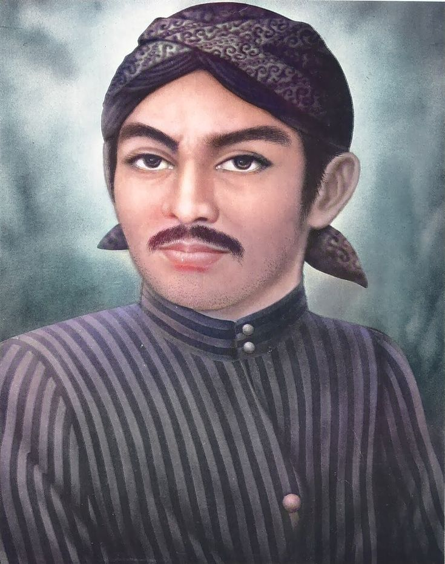
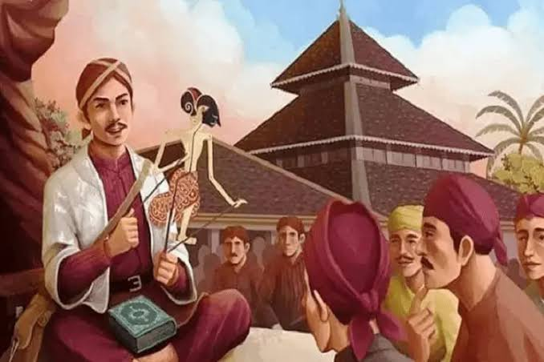

sunan kalijaga

1450-1592 M
Tahukah kamu? Sunan Kalijaga adalah Raden Said (atau Raden Sahid/Raden Mas Said). Beliau merupakan putra dari Tumenggung Wilatikta, Bupati Tuban, dan lahir sekitar tahun 1450 Masehi. Sebelum menjadi anggota Walisongo, beliau juga dikenal dengan nama lain seperti Lokajaya, Syekh Malaya, atau Pangeran Tuban
Berasal dari kata "bayangan", wayang kulit merupakan seni tradisional yang berkembang pesat di Jawa dan Bali. Pertunjukan ini menggabungkan seni rupa (tatahan wayang), seni musik (gamelan), seni peran (dalang), dan sastra.

melalui wayang kulit
menggunakan media Wayang Kulit untuk berdakwah, di mana beliau sendiri yang menjadi dalangnya. Beliau menciptakan tokoh-tokoh wayang baru yang melambangkan rukun Islam